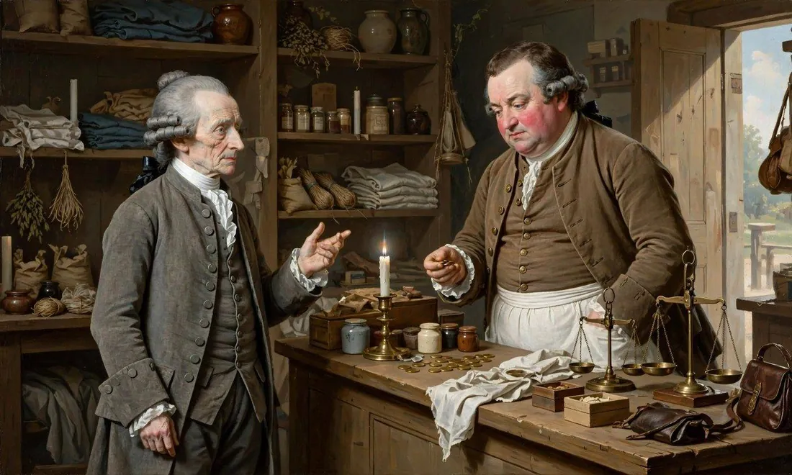
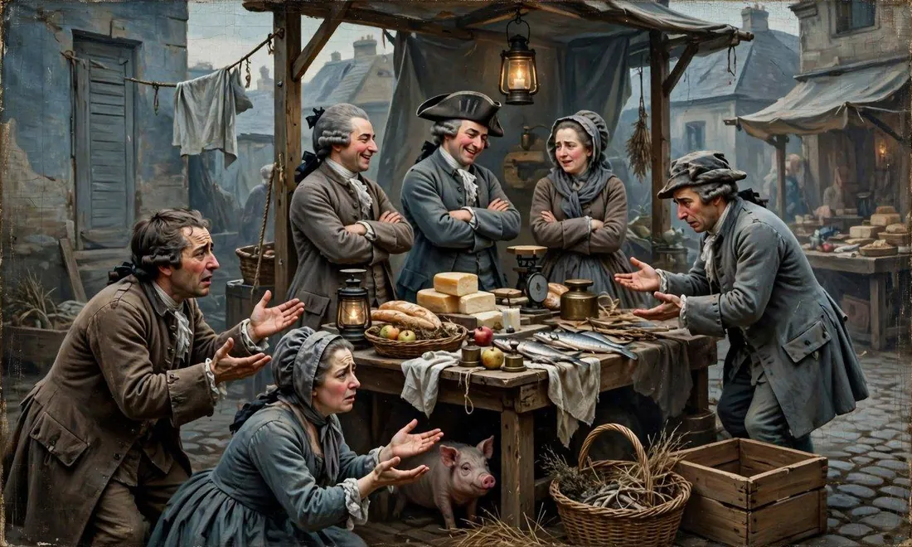
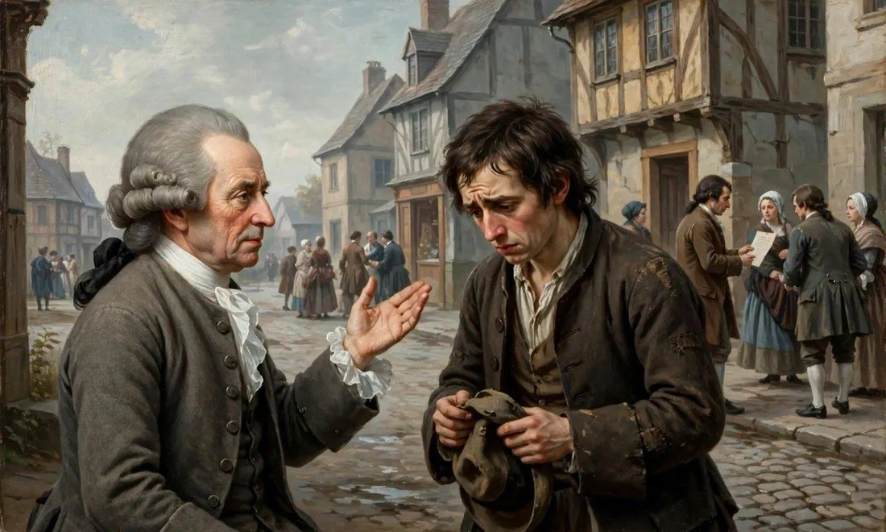
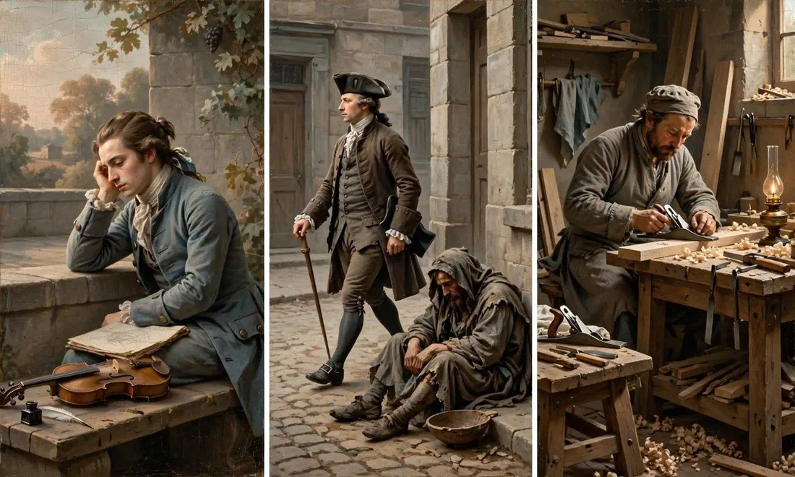
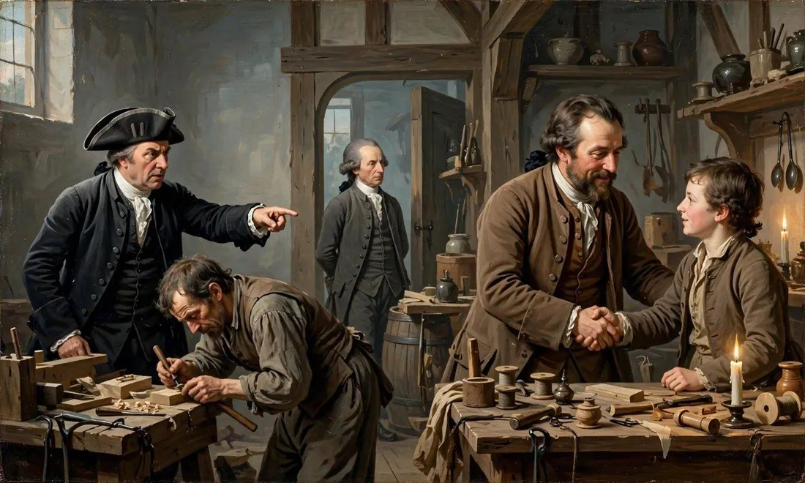
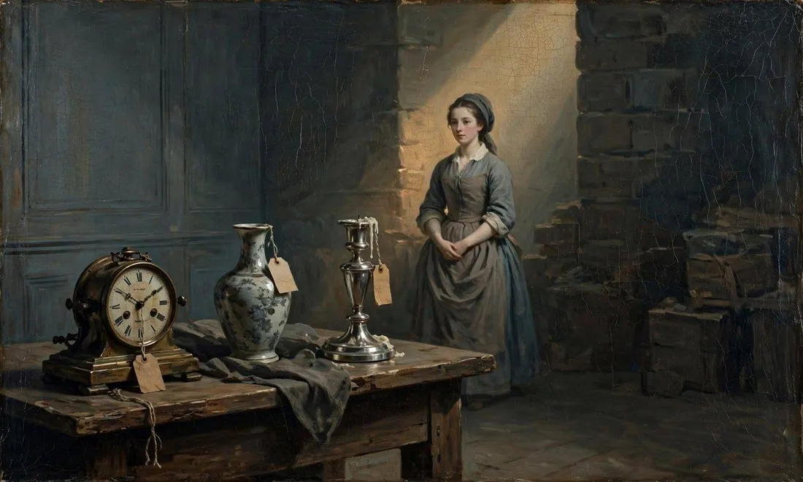

Que doit-on faire, quoi qu’on désire ? Suivez Kant en quatre planches.
D’après Kant, Fondation de la métaphysique des mœurs (1785), et, pour la dernière planche, Sur un prétendu droit de mentir par humanité (1797). Les renvois sont à la pagination de l’Académie (Ak. IV). Les dialogues sont imaginés, les idées sont celles des textes.
Touchez une image pour l’agrandir, puis passez d’une case à l’autre avec les flèches ‹ › ou celles du clavier.
Planche 1
Le devoir et la bonne volonté
KantQu’est-ce qui rend une action vraiment bonne ?
Königsberg, 1785. Kant, professeur de philosophie, publie la Fondation de la métaphysique des mœurs. Il y cherche le principe suprême de la morale.
Le marchandJe rends la monnaie exacte. Les voisins regardent.
Un marchand ne profite pas de l’inexpérience de ses clients pour leur faire payer trop cher. Il agit conformément au devoir, mais par intérêt : il veut garder sa clientèle (Ak. IV, 397).

KantTu es honnête. Mais l’es-tu par devoir, ou pour garder tes clients ?
Le marchandIl faut bien que la boutique tourne…
Rendre la monnaie exacte est conforme au devoir. Mais seule l’action faite par devoir, par respect pour la loi morale, a une valeur morale (Ak. IV, 397-398). La seule chose bonne sans restriction est une bonne volonté (393).
Planche 2
Deux sortes d’ordres
Le médecinSi tu veux guérir, fais ceci.
L’empoisonneurSi tu veux tuer, fais cela.
Un impératif hypothétique ordonne un moyen pour atteindre un but. Les règles du médecin pour guérir valent autant que celles de l’empoisonneur pour tuer à coup sûr (Ak. IV, 414-415).
KantAgis uniquement d’après la maxime que tu peux vouloir comme loi universelle.
L’impératif catégorique, lui, ordonne sans condition. Kant en donne plusieurs formules (Ak. IV, 421-433). Une maxime est la règle personnelle d’après laquelle on agit.
Loi universelle Agis uniquement d’après la maxime grâce à laquelle tu peux vouloir en même temps qu’elle devienne une loi universelle (421).
Loi de la nature Agis comme si la maxime de ton action devait être érigée par ta volonté en loi universelle de la nature (421).
L’humanité comme fin Traite l’humanité, en toi comme en tout autre, toujours en même temps comme une fin, jamais simplement comme un moyen (429).
Le règne des fins Agis comme si tu étais, par tes maximes, un membre législateur d’un règne des fins, un monde où chacun est une fin en soi (433).
Kant« Sois honnête pour qu’ils reviennent », c’est une règle d’habileté. « Sois honnête », tout court, c’est la morale.
« Sois honnête, afin que tes clients reviennent » dépend d’un but : c’est un impératif hypothétique. « Sois honnête », sans condition, serait catégorique (Ak. IV, 414-416). Pour Kant, seule la seconde forme est morale.
Planche 3
Le test de l’universalité
L’emprunteurJe vous rembourserai, c’est promis. (Je n’en ai pas les moyens.)
Un homme sans argent songe à emprunter en promettant de rembourser, sans en avoir l’intention. Peut-il faire cette promesse ? (Ak. IV, 422)

Un marchandUne promesse ? Je n’y crois plus. Payez comptant !
Imaginons que tout le monde fasse de même. Plus personne ne croirait aucune promesse : celle-ci n’aurait plus de sens (Ak. IV, 422).

KantPeux-tu vouloir que tous fassent comme toi ?
L’emprunteurNon. Plus personne ne croirait une promesse.
Peut-on vouloir que la règle « quand j’ai besoin d’argent, je promets sans intention de rendre » devienne une loi universelle ? Non : elle se détruirait elle-même, car plus personne ne croirait aucune promesse (Ak. IV, 422).

Autres exemples de Kant : négliger ses talents, refuser d’aider quelqu’un dans le besoin (Ak. IV, 422-423).
Les talents Un homme néglige ses talents pour se divertir. Il ne peut pas vouloir cela comme loi universelle : un être raisonnable veut que ses facultés se développent (422-423). C’est une contradiction dans la volonté.
L’entraide Un homme prospère refuse d’aider les autres. Si tout le monde faisait de même, il se priverait lui-même de l’aide qu’il pourrait désirer un jour (423). Là encore, c’est une contradiction dans la volonté.
La promesse Vue plus haut. Cette fois, la règle est même impossible à penser comme loi universelle : c’est une contradiction dans la conception (422).
Planche 4
La dignité et ses limites

KantNe l’utilise pas seulement. Respecte-le aussi.
Autre formule : traite l’humanité, en toi et en autrui, toujours comme une fin, jamais simplement comme un moyen (Ak. IV, 429).

Ce qui a un prix peut être remplacé. Ce qui est au-dessus de tout prix a une dignité (Ak. IV, 434-435).
L’inconnuVotre ami est-il ici ?
Un cas disputé : un homme cherche à tuer ton ami caché chez toi et te demande où il est. Faut-il mentir ? Benjamin Constant objectait à Kant ; Kant répond en 1797 (Sur un prétendu droit de mentir par humanité).
ConstantDire la vérité est un devoir envers qui y a droit. Un meurtrier n’y a pas droit.
Benjamin Constant, en 1796, objectait : si dire la vérité est un devoir absolu, il faudrait la dire même à un meurtrier qui cherche notre ami. L’objection est célèbre.
KantJe ne trouve aucun droit de mentir, même par humanité.
En 1797, Kant maintient sa position : la véracité est un devoir envers tous, sans exception, et le menteur répond des conséquences de son mensonge (Sur un prétendu droit de mentir par humanité, Ak. VIII, 425-430).
Un lecteurC’est trop rigide !
Une lectriceIl distingue pourtant se taire et mentir.
Beaucoup de commentateurs jugent cette position trop rigide. D’autres relèvent que Kant distingue se taire et mentir, ou que cet écrit de 1797 porte sur la véracité, et non sur toute la morale de la Fondation. Le débat reste ouvert.
KantAgis de façon que tu traites l’humanité comme une fin, jamais simplement comme un moyen.
En résumé : agis par devoir, selon une règle que tu pourrais vouloir universelle, en traitant toujours l’humanité comme une fin. Les quatre formules (Ak. IV, 421-433) en sont l’expression.